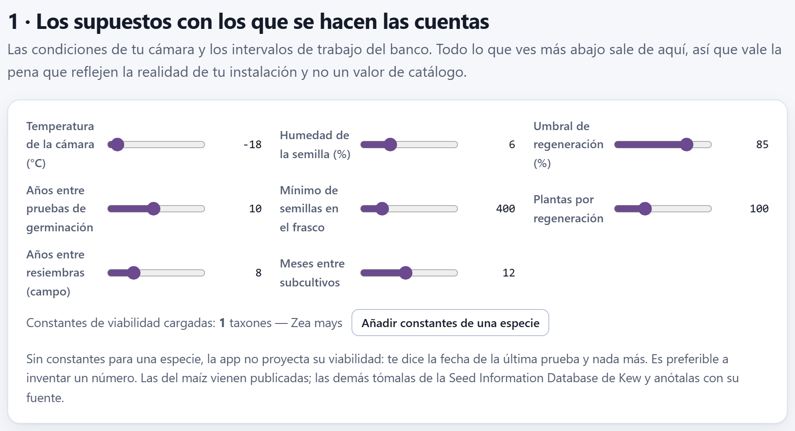

Manejo del banco
El simulador del Bloque 1 seguía a una accesión imaginaria; el Bloque 8 hace lo mismo con tus lotes. Con la última prueba de germinación, las existencias, las fechas de regeneración y las condiciones de tu cámara, proyecta con la ecuación de Ellis y Roberts en qué porcentaje anda hoy cada lote de semilla y cuántos años le quedan antes del umbral; revisa cada ruta de conservación —semillas, campo, in vitro, criopreservación, reserva y parcela— y levanta alertas ordenadas por urgencia; registra las pruebas y regeneraciones que vas haciendo; calcula cuántas plantas y cuántas semillas hacen falta para regenerar sin perder los alelos raros, y dibuja la carga de trabajo de los próximos 25 años.
- 8.1El tablero del banco
- 8.2Los supuestos: la cámara y los intervalos
- 8.3La viabilidad de hoy, lote por lote
- 8.4Las alertas, ruta por ruta
- 8.5La lista de trabajo
- 8.6Registrar lo que se hace y el plan en CSV
- 8.7Cuántas plantas y cuántas semillas
- 8.8La carga de trabajo de los próximos 25 años
- 8.9El banco por rutas
8.1El tablero del banco
El Bloque 8 trabaja con cuatro campos del pasaporte que el capítulo 2 presentó (apartado 2.1): GP_STOCK (existencias), GP_GERMPCT (última germinación), GP_GERMDATE (fecha de esa prueba) y GP_REGENDATE (última regeneración, resiembra o subcultivo), más la ruta de conservación (GP_CONS, o la que se deduce de STORAGE) y el duplicado de seguridad (DUPLSITE). Todo se recalcula al entrar al bloque, sin espera: las cuentas son instantáneas. Si no hay accesiones, el bloque dice Primero carga tus accesiones en el Bloque 2.

Todo lo que el bloque calcula se mide desde hoy, la fecha de tu computadora: los años desde la última prueba, la viabilidad proyectada, las visitas atrasadas. Las cifras de este capítulo se tomaron el 30 de octubre de 2026 con la colección de ejemplo; si la abres otro día, las fechas cambian y, con ellas, algunos decimales y quizá alguna alerta. Las fechas incompletas se completan a la mitad: un año sin mes cuenta desde el 15 de junio, y un mes sin día, desde el 15.
Los seis recuadros resumen el estado del banco. Cada accesión recibe el nivel de su alerta más grave (apartado 8.4): en apuros, pide atención, falta un dato o al día.
| Recuadro | Ejemplo | Qué cuenta |
|---|---|---|
| Lotes en apuros | 10 | Accesiones con al menos una alerta grave (roja). En rojo si hay alguna. |
| Piden atención | 21 | Accesiones cuya alerta más grave es de atención (ocre). |
| Al día | 9 | Accesiones sin ninguna alerta, «de 46 accesiones». Las 6 restantes sólo tienen un aviso de dato faltante, que no tiene recuadro propio: 10 + 21 + 9 + 6 = 46. |
| Con proyección de viabilidad | 15 | Lotes de semilla con constantes de viabilidad para su especie y con prueba fechada: los 15 maíces y teocintles en banco de semillas. |
| Sin duplicado de seguridad | 21 | Accesiones ex situ sin copia en otra institución (apartado 8.4). |
| Existencias registradas | 53,047 | La suma de GP_STOCK de todas las accesiones. |
El último recuadro suma cosas distintas —semillas, plantas de campo, frascos, criotubos y hasta los individuos censados en la reserva y en las parcelas—, así que sólo sirve para ver si la cifra cambia de una temporada a otra. Las existencias que importan van por ruta, en la sección 4 (apartado 8.9). Debajo de las cuatro secciones del bloque, una nota recuerda que Una proyección no sustituye a una prueba. (figura 8.6).
8.2Los supuestos: la cámara y los intervalos
La sección 1 · Los supuestos con los que se hacen las cuentas reúne ocho deslizadores. Son las condiciones de tu cámara y los intervalos de trabajo de tu banco; todo lo que el bloque dice más abajo sale de ellos. El número a la derecha cambia mientras arrastras, y el cálculo se rehace al soltar. Los valores se guardan en el navegador y se conservan al cerrar la app.

| Deslizador | Intervalo · paso | Qué gobierna |
|---|---|---|
| Temperatura de la cámara (°C) | −20 a 25 · 1 −18 | La t de la ecuación de viabilidad (apartado 8.3). |
| Humedad de la semilla (%) | 3 a 14 · 0.5 6 | La m de la ecuación, en % del peso fresco. |
| Umbral de regeneración (%) | 50 a 95 · 5 85 | Por debajo de esta germinación, medida o proyectada, el lote está en apuros y hay que regenerarlo. |
| Años entre pruebas de germinación | 1 a 20 · 1 10 | Cuándo vence la prueba de un lote de semilla y cada cuánto se repite en la carga de trabajo. |
| Mínimo de semillas en el frasco | 50 a 2 000 · 50 400 | Por debajo, existencias en apuros; por debajo de 1.5 veces el mínimo (600), aviso de que se acercan. |
| Plantas por regeneración | 20 a 300 · 10 100 | Se guarda, pero ningún cálculo lo usa: la calculadora de la sección 3 tiene sus propios deslizadores (apartado 8.7). |
| Años entre resiembras (campo) | 1 a 30 · 1 8 | El ciclo del banco de campo: pasado este plazo desde GP_REGENDATE, la resiembra está atrasada. |
| Meses entre subcultivos | 2 a 24 · 1 12 | El intervalo del cultivo in vitro de crecimiento lento. |
Otros seis supuestos son fijos y no tienen deslizador: el mínimo de 25 plantas en el banco de campo, de 10 frascos in vitro y de 20 criotubos; una visita cada 2 años a la reserva genética y cada año a la parcela, y 200 semillas por prueba de germinación como valor propuesto al registrarla (apartado 8.6).
Las constantes de viabilidad
Debajo de los deslizadores, la línea Constantes de viabilidad cargadas dice cuántos taxones tienen constantes y nombra los cuatro primeros. De fábrica sólo hay uno, Zea mays, con las constantes publicadas por Ellis y Roberts: KE = 6.474, CW = 2.115, CH = 0.0329 y CQ = 0.000478. La app escribe «1 taxones», sin concordar el número.
El botón Añadir constantes de una especie abre cuatro preguntas seguidas del navegador: el taxón (te sugiere los de tu colección), KE, CW y la fuente. Las dos primeras constantes proponen los valores del maíz; CH y CQ no se preguntan y toman los valores de arriba, que describen el efecto de la temperatura en muchas especies ortodoxas (apartado 1.5). Escribe el taxón exactamente como el género y la especie del pasaporte, separados por un espacio: Phaseolus vulgaris, no P. vulgaris ni frijol. Las constantes se guardan en el navegador; si vuelves a añadir el mismo taxón, las nuevas reemplazan a las anteriores, y no hay manera de borrarlas desde la app.
En las otras 17 especies de la colección de ejemplo la app no proyecta nada: dice que faltan las constantes y trabaja sólo con la fecha y el valor de la última prueba. Es preferible a inventar un número. Toma KE y CW de tu especie de la Seed Information Database de Kew o de la literatura, y anota la fuente en la cuarta pregunta. Aceptar los valores propuestos para otra especie equivale a suponer que envejece como un maíz.
8.3La viabilidad de hoy, lote por lote
Para cada lote en banco de semillas —o sin ruta declarada, que el bloque trata igual— con constantes para su especie, con germinación y con fecha de prueba, la app proyecta la germinación de hoy y los años que le quedan antes de cruzar el umbral. Es la misma ecuación del simulador del Bloque 1 (apartado 1.5), aplicada desde la última prueba real del lote.
Ki es la germinación de la última prueba expresada en probits: Ki = Φ−1(g0/100); p, los días transcurridos desde esa prueba; σ, los días que tarda la viabilidad en bajar un probit, y Φ, la normal acumulada. Con el umbral u, los años que le quedan al lote desde hoy son
Si la cuenta da un número negativo, el lote ya cruzó el umbral. La germinación se acota entre 0.01 y 99.99 % antes de pasarla a probits, porque Φ−1 de 0 o de 100 es infinito.
La última prueba dio 88 % el 10 de marzo de 2024; el 30 de octubre de 2026 han pasado 2.642 años (965 días). La cámara está a −18 °C con 6 % de humedad.
| log10 σ = 6.474 − 2.115 × 0.77815 − 0.0329 × (−18) − 0.000478 × 324 = 6.474 − 1.6458 + 0.5922 − 0.1549 = 5.2655 | |
| σ = 105.2655 = 184 305 días = 504.6 años por probit | |
| Ki = Φ−1(0.88) = 1.17499 | v = 1.17499 − 965 / 184 305 = 1.16975 |
| germinación de hoy = 100 · Φ(1.16975) = 87.89 % → la tabla escribe 88 % → 88 % | |
| años al umbral = 504.6 × (1.17499 − 1.03643) − 2.642 = 69.91 − 2.64 = 67.27 años | |
A −18 °C el lote pierde una décima de punto en dos años y medio: la proyección no tiene nada que avisar, y la única alerta del lote es que no tiene duplicado de seguridad. El Teocintle de Balsas (MEX-ZP-0011) es otro caso: su última prueba dio 81 % el 14 de septiembre de 2023, ya por debajo del umbral de 85 %; la proyección lo pone hoy en 80.83 % y sus «años al umbral» son −83.1, porque en esas condiciones tardaría 83 años en bajar de 85 a 81 %.
La viabilidad proyectada aparece en la columna Germinación de la lista de trabajo, detrás de una flecha: 88 % → 88 % es la última prueba y la de hoy. Debajo va el tiempo desde la prueba, en años con un decimal: hace 2.6 a.
Lo que pesan la temperatura y la humedad
A −18 °C y 6 % de humedad la diferencia entre la prueba y la proyección es invisible. Las condiciones de la cámara son las que cambian el cuadro: mueve los dos primeros deslizadores y mira cómo responde la colección.
| Cámara | σ (años por probit) | MEX-ZM-0001 hoy | Años al umbral | En apuros | Al día |
|---|---|---|---|---|---|
| −18 °C, 6 % (de fábrica) | 504.6 | 87.89 % | 67.27 | 10 | 9 |
| 5 °C, 6 % | 122.8 | 87.56 % | 14.37 | 10 | 9 |
| 5 °C, 8 % | 66.8 | 87.19 % | 6.62 | 10 | 9 |
| 20 °C, 12 % (sin cámara) | 6.0 | 76.92 % | −1.81 | 19 | 0 |
En un cuarto frío a 5 °C el maíz azul pasa de tener 67 años por delante a tener 14, y con semilla al 8 % de humedad, menos de 7; el tablero todavía no cambia, pero la carga de trabajo sí: a 5 °C y 6 % aparecen regeneraciones en los años 14 y 21 (apartado 8.8). En un banco comunitario sin cámara, a 20 °C y 12 %, nueve maíces más cruzan el umbral y los lotes en apuros pasan de 10 a 19; los otros cuatro —los de 93 a 95 %— quedan con menos de 3 años y piden atención.

8.4Las alertas, ruta por ruta
Cada ruta de conservación tiene su propio reloj, y el bloque le aplica a cada accesión las revisiones de su ruta. Cada alerta tiene un nivel: grave (en rojo, 3 puntos), atención (en ocre, 2 puntos) o dato faltante (en azul, 1 punto). La tabla 8.4 las reúne todas.
Con la colección de ejemplo, las 10 accesiones en apuros son cuatro lotes de semilla bajo el umbral —el teocintle (81 %), el maíz ancho de riego (72 %), el frijol vaquita (84 %) y el frijol tépari (79 %)—, tres accesiones de campo con pocas plantas —el cacao, el aguacate y un chayote— y los tres cultivos in vitro, con 32 a 34 meses sin subcultivo frente a un intervalo de 12. Las 6 que sólo tienen un dato faltante son lotes de semilla sin constantes y con todo lo demás en orden: el ayocote, la calabacita, dos chiles, el tomate milpero y el trigo.
| Ruta | Cuándo aparece y qué dice | Nivel | Ej. |
|---|---|---|---|
| Banco de semillas (o sin ruta declarada) | La proyección queda por debajo del umbral: La proyección lo pone en N % de germinación, por debajo del umbral de 85 %. | grave | 2 |
| Le quedan menos de 3 años antes de cruzar el umbral: Le quedan unos N años… | atención | 0 | |
| Tiene germinación, pero no hay constantes para su especie: No hay constantes de viabilidad para… | dato | 14 | |
| No tiene fecha de prueba: Nunca se le ha hecho una prueba de germinación. | grave | 0 | |
| Pasaron más años que el intervalo desde la última prueba: Van N años desde la última prueba… | atención | 0 | |
| La última prueba ya dio menos que el umbral: La última prueba dio N %, por debajo del umbral. | grave | 4 | |
| Existencias por debajo del mínimo: Quedan N semillas… | grave | 0 | |
| Existencias por debajo de 1.5 veces el mínimo: Las existencias (N) se acercan al mínimo. | atención | 2 | |
| Sin existencias registradas: No hay existencias registradas. | dato | 0 | |
| Banco de campo | Sin fecha de la última resiembra: No hay fecha de la última resiembra. | atención | 2 |
Más años que el ciclo desde GP_REGENDATE: Van N años desde la última resiembra… | grave | 2 | |
| Menos de 25 plantas: Sólo quedan N plantas (el mínimo es 25): la deriva en la próxima resiembra será fuerte. | grave | 3 | |
| Cultivo in vitro | Sin fecha del último subcultivo: No hay fecha del último subcultivo. | atención | 0 |
Más meses que el intervalo desde GP_REGENDATE: Van N meses desde el último subcultivo… | grave | 3 | |
| Menos de 10 frascos: Quedan N frascos (el mínimo es 10). | atención | 0 | |
| Criopreservación | Menos de 20 criotubos: Quedan N criotubos (el mínimo es 20). | atención | 0 |
| Reserva y parcela | Más de 2 años (reserva) o 1 año (parcela) desde la última visita, que es GP_REGENDATE o, si falta, la fecha de colecta: Hace N años que no se registra una visita al sitio… | atención | 5 |
| Toda ruta ex situ | Ningún sitio de DUPLSITE es una institución distinta de INSTCODE: Sin duplicado de seguridad en otra institución. | atención | 21 |
El duplicado de seguridad sigue la misma regla que la validación del Bloque 2 (apartado 2.6): DUPLSITE puede tener varios códigos separados por punto y coma, y basta con que uno sea distinto del código de la institución que conserva la accesión. Las rutas in situ no lo piden; todas las demás, sí, incluidos la criopreservación y el banco de ADN. El banco de ADN no tiene más revisión que ésa, y la criopreservación sólo la del número de criotubos: el bloque no programa pruebas de recuperación.
Un lote de maíz cuya prueba ya dio menos que el umbral recibe dos alertas graves: la de la prueba y la de la proyección, que parte de ese mismo valor. Al Teocintle de Balsas le pasa: La proyección lo pone en 81 %… y La última prueba dio 81 %… No son dos problemas, sino uno dicho dos veces; pero las dos suman puntos, y empujan el lote hacia arriba de la lista frente a uno de otra especie con el mismo defecto.
8.5La lista de trabajo
La sección 2 · Qué hay que hacer es la lista de la temporada: una fila por accesión, ordenada por urgencia. El puntaje de una accesión es la suma de los puntos de sus alertas (3, 2 o 1); la lista va de mayor a menor puntaje y, a igual puntaje, del nivel más grave al más leve; si siguen empatadas, en el orden del pasaporte. Muestra hasta 200 filas.
| MEX-TC-0027, cacao: resiembra atrasada (8.7 > 8 años) 3 + 20 plantas < 25 → 3 + sin duplicado 2 = 8 | |
| MEX-PH-0041, frijol tépari: sin constantes 1 + 79 % < 85 → 3 + 430 < 600 → 2 + sin duplicado 2 = 8 | |
| MEX-ZM-0043, maíz ancho de riego: proyección 71.52 % → 3 + prueba 72 % → 3 + sin duplicado 2 = 8 | |
| MEX-SE-0046, chayote: sin fecha de resiembra 2 + 15 plantas → 3 + sin duplicado 2 = 7 |
Los tres primeros empatan con 8 puntos y con nivel grave, así que quedan en el orden del pasaporte. Siguen el chayote (7), el teocintle y el frijol vaquita (6) y el aguacate (6). Las 9 accesiones al día van al final, con 0 puntos.
| Columna | Qué muestra |
|---|---|
| Accesión | El número de accesión y, debajo, los primeros 24 caracteres del nombre. |
| Ruta | La ruta de conservación, en una etiqueta del color del nivel de la accesión: roja en apuros, ocre si pide atención, azul si falta un dato, verde si está al día. |
| Existencias | GP_STOCK, en las unidades de la ruta. |
| Germinación | La última prueba, la proyección de hoy tras la flecha si la hay, y el tiempo desde la prueba. En las rutas sin prueba de germinación escribe 0 % en vez de un guion: no es un resultado, sino la casilla vacía. |
| Qué pasa | Las alertas, cada una con una raya del color de su nivel, o la etiqueta al día. |
| (botones) | Registrar prueba en todas las filas; Regeneración en semillas y campo, y Subcultivo in vitro (apartado 8.6). |
![La sección 2: los selectores Mostrar en todo y Ruta en todas, el botón Plan de trabajo en CSV y las tres primeras filas de la tabla: MEX-TC-0027, Cacao criollo de Ocosing, Banco de campo o colección viva, 20, 0 %, con tres alertas, van 8.7 años desde la última resiembra, sólo quedan 20 plantas y sin duplicado de seguridad; MEX-PH-0041, Frijol tepari, Banco de semillas, 430, 79 % hace 3.8 a, con cuatro alertas; MEX-ZM-0043, Maíz ancho de riego, Banco de semillas, 1,150, 72 % → 72 % hace 7.2 a, con tres alertas; cada fila con los botones Registrar prueba y Regeneración, este último cortado en el borde derecho](../img/b8-tareas.png)
Dos selectores filtran la lista. Mostrar deja todo, sólo las accesiones en apuros (10), las que piden atención (21), las que tienen faltan datos (6) o las que están al día (9). Ruta deja una sola ruta; cada opción dice cuántas accesiones tiene, por ejemplo Banco de semillas (28). La opción sin declarar (1) deja la lista vacía aunque la accesión exista: es el chile costeño (MEX-CH-0042), y para verlo hay que usar todas.
8.6Registrar lo que se hace y el plan en CSV
Los botones de cada fila escriben en el pasaporte lo que hiciste hoy. Funcionan con las ventanas de pregunta del navegador; si cancelas la primera, no se guarda nada. Al terminar, el pasaporte se guarda en el navegador, la tabla del Bloque 2 se actualiza y el Bloque 8 se recalcula.
| Botón | Pregunta | Cambia en el pasaporte |
|---|---|---|
| Registrar prueba | El resultado (%, de 0 a 100; acepta coma decimal) y cuántas semillas se usaron, con 200 propuestas (0 si no descuentas). | GP_GERMPCT (con un decimal), GP_GERMDATE, y resta las semillas de GP_STOCK sin bajar de 0. |
| Regeneración (semillas) | Las existencias después de regenerar y la germinación del lote nuevo, con 96 % propuesto; en blanco si aún no se prueba. | GP_REGENDATE, GP_STOCK si es mayor que 0 y, si diste germinación, GP_GERMPCT y GP_GERMDATE. |
| Regeneración (campo) y Subcultivo (in vitro) | Sólo las existencias después de la resiembra o el subcultivo. | GP_REGENDATE y GP_STOCK. |
En el Maíz azul de Apoala (MEX-ZM-0001), Registrar prueba con 80 % y 200 semillas deja GP_GERMPCT = 80, GP_GERMDATE = 20261030 y GP_STOCK = 1 600 (1 800 − 200). El lote pasa de pedir atención a estar en apuros, con la proyección y la prueba por debajo de 85 %. Después, Regeneración con 3 000 semillas y 97 % deja GP_STOCK = 3 000, GP_GERMPCT = 97 y las dos fechas en 20261030; al lote sólo le queda la alerta de que no tiene duplicado de seguridad.
Los cambios entran al pasaporte como cualquier edición: se ven en la ficha del Bloque 2 y viajan en sus exportaciones. No hay un historial de pruebas; cada registro reemplaza al anterior. Si necesitas conservar la serie, exporta el pasaporte antes de cada temporada. Dos detalles: Registrar prueba aparece también en las rutas que no usan prueba de germinación —campo, in vitro, criopreservación e in situ—, donde no tiene sentido; y la accesión sin ruta declarada, que el bloque revisa como lote de semilla, no tiene botón de regeneración.
El plan de trabajo en CSV
El botón Plan de trabajo en CSV guarda plan-de-trabajo.csv, en UTF-8, con una fila por accesión con alguna alerta —37 con la colección de ejemplo— en el orden del pasaporte y sin aplicar los filtros. Si ninguna tiene alertas, la app dice No hay nada pendiente: toda la colección está al día.
| ACCENUMB | ruta | urgencia | existencias | germinacion_ultima | germinacion_proyectada | anios_al_umbral |
|---|---|---|---|---|---|---|
| MEX-ZM-0001 | seed | warn | 1800 | 88 | 87.9 | 67.3 |
| MEX-ZP-0011 | seed | crit | 900 | 81 | 80.8 | -83.1 |
Las otras cuatro columnas son ACCENAME, TAXON (género y especie), anios_desde_prueba y acciones, las alertas de la accesión. La ruta y la urgencia van con sus códigos internos (seed, field, invitro, cryo, insitu, onfarm; crit, warn, info), los años con un decimal y las alertas separadas por una raya vertical, siempre en español. Las rutas sin prueba de germinación llevan 0 en germinacion_ultima, como en la tabla. Ordénalo por urgencia en tu hoja de cálculo y repártelo entre quienes hacen cada tarea.
8.7Cuántas plantas y cuántas semillas
La sección 3 · Cuántas plantas y cuántas semillas tiene dos paneles. El de la izquierda, Plantas necesarias, responde la pregunta de toda regeneración: con cuántas plantas no se pierden los alelos raros. Tiene tres deslizadores: Frecuencia del alelo a conservar (1 a 20 %, de fábrica 5 %), Seguridad deseada (80 a 99 %, de fábrica 95 %) y Germinación del lote (%) (20 a 100 % en pasos de 5, de fábrica 85 %). El resultado cambia mientras arrastras.
Una regeneración con n plantas es un muestreo de gametos. En una especie alógama, cada planta aporta dos gametos independientes, y la probabilidad de que un alelo de frecuencia p quede fuera de los 2n gametos es (1 − p)2n. En una autógama, casi homocigota, cada planta aporta en la práctica un solo gameto efectivo, y el exponente es n. Para conservar el alelo con probabilidad P:
Las semillas que hay que sembrar salen de dividir las plantas entre la germinación g y un establecimiento en campo fijo de 90 %: semillas = ⌈ n / (g · 0.9) ⌉.
![La sección 3: a la izquierda, el panel Plantas necesarias con Frecuencia del alelo a conservar 5 %, Seguridad deseada 95 % y Germinación del lote 85 %; especie alógama 30 plantas y 40 semillas a sembrar; especie autógama 59 plantas y 78 semillas a sembrar; y la nota de que con las 100 plantas que recomienda FAO la probabilidad es de 100.00 %; a la derecha, la gráfica de barras Carga de trabajo de los próximos 25 años, con dos picos de 25 pruebas de germinación en los años 7 y 17, regeneraciones en el año 0 y resiembras repartidas, con la leyenda y la nota de los picos](../img/b8-calculo.png)
| p = 0.05, P = 0.95: ln 0.05 = −2.99573; ln 0.95 = −0.05129 | |
| alógama: 2.99573 / (2 × 0.05129) = 29.20 → 30 plantas | autógama: 2.99573 / 0.05129 = 58.40 → 59 plantas |
| semillas: 30 / (0.85 × 0.9) = 39.2 → 40 | semillas: 59 / 0.765 = 77.1 → 78 |
| p = 0.01, P = 0.95: alógama 2.99573 / (2 × 0.01005) = 149.04 → 150 plantas y 197 semillas; autógama 299 y 391 | |
| con 100 plantas y p = 0.01: 1 − 0.99200 = 1 − 0.1340 = 0.8660 → la nota dice 86.60 % | |
Un alelo del 5 % se conserva con 30 plantas de una alógama; uno del 1 % pide 150. Por eso conviene fijar la frecuencia más baja que te importe, no la más cómoda.
La nota de abajo compara con las 100 plantas que recomienda la FAO para una alógama. Con la frecuencia de fábrica, 5 %, la probabilidad es 1 − 0.95200 = 99.9965 %, y la nota la redondea a 100.00 %, que suena a certeza y no lo es. Baja la frecuencia a 1 o 2 % para ver qué tan lejos queda la recomendación. La cuenta supone una muestra al azar y cruzamiento sin restricciones: si sólo florece y se cruza una parte de las plantas, el número efectivo es menor que el que siembras, y hay que sembrar más.
8.8La carga de trabajo de los próximos 25 años
El panel de la derecha de la sección 3 es una gráfica de barras apiladas: por cada año, de hoy (+0) a dentro de 25 (+25), cuántas pruebas de germinación (morado), regeneraciones (naranja) y resiembras de campo (rojo) tocarían si se mantienen los intervalos de la sección 1. Es lo que decide el presupuesto de un banco: cuántas siembras, cuánto invernadero y cuántas manos hacen falta cada año.
| Tarea | Cuándo cae |
|---|---|
| Prueba de germinación | En los lotes de semilla (o sin ruta declarada): intervalo − años desde la última prueba, y de ahí cada intervalo; en el año 0 si nunca se ha probado. |
| Regeneración | Sólo en los lotes con proyección: el año en que cruzan el umbral, o el año 0 si ya lo cruzaron. |
| Resiembra de campo | Ciclo − años desde la última resiembra, y de ahí cada ciclo; en el año 0 si no hay fecha. |
Cada fecha se redondea al año entero más cercano. Con la colección de ejemplo los dos picos son los años 7 y 17: 25 lotes se probaron entre junio de 2023 y abril de 2024, así que sus pruebas vencen juntas dentro de 6.6 a 7.4 años y se repiten diez años después. Es el caso que la nota del panel señala: conviene adelantar parte de esas pruebas para repartirlas. En el año 0 caen las regeneraciones del teocintle y del maíz ancho de riego, y las resiembras del café y de un chayote, que no tienen fecha.
El trabajo atrasado. Una tarea vencida da una fecha negativa y la gráfica la salta: el aguacate y el cacao, con la resiembra atrasada (9.0 y 8.7 años contra un ciclo de 8), no aparecen en el año 0, sino hasta el 7, en su siguiente ciclo. Lo mismo pasa con una prueba vencida. El trabajo atrasado está en la lista de la sección 2, no aquí.
Los subcultivos. Se calculan, pero no se dibujan ni entran en la escala, y la leyenda no los menciona.
Las regeneraciones sin proyección. Un lote de frijol bajo el umbral necesita regenerarse, pero sin constantes la gráfica no lo programa.
Al pasar el puntero sobre un segmento, una etiqueta dice el año y cuántas tareas hay, pero nombra la tarea con su clave interna en inglés: año +7: 25 tests. La escala vertical tiene tres marcas, 0, la mitad redondeada y el máximo (con la colección de ejemplo, 0, 14 y 27). La gráfica también entra en el informe del Bloque 10 (capítulo 10).
La carga cambia con los supuestos. Con pruebas cada 5 años, los picos de 25 pruebas se repiten en los años 2, 7, 12, 17 y 22. Con la cámara a 5 °C y 8 % de humedad aparecen regeneraciones en los años 7, 10, 14, 18 y 22; a 20 °C y 12 %, 14 regeneraciones caen en el año 0.
8.9El banco por rutas
La sección 4 · El banco por rutas resume la colección por ruta de conservación, de la que tiene más accesiones a la que tiene menos: cuántas accesiones, cuántas en apuros y cuántas piden atención (en etiquetas de color cuando no son 0) y la suma de sus existencias. Aquí las existencias sí son comparables, porque cada fila tiene una sola unidad.

Cómo se lee. El banco de semillas concentra las accesiones, pero sus problemas son pocos y casi todos de respaldo: 4 de 28 lotes en apuros. El campo y el in vitro son lo contrario: 3 de 8 y 3 de 3 en apuros, con 305 plantas y 72 frascos en total. Son las rutas que se pierden por descuido —una resiembra que no se hizo, un subcultivo que se atrasó— y las que piden más manos por accesión. La fila sin declarar es el chile costeño, que no tiene GP_CONS y cuyo STORAGE trae un código que no existe en MCPD (15, uno de los errores sembrados para el Bloque 3): declárale una ruta en el Bloque 2 para que reciba las revisiones correctas.
La nota del pie, Una proyección no sustituye a una prueba., resume el límite del bloque: la ecuación dice lo que debería pasarle a un lote en esas condiciones, no lo que le pasó. Un secado incompleto, un frasco mal cerrado o un corte de luz no aparecen en ninguna fórmula. Usa la proyección para decidir qué lotes probar primero, no para ahorrarte la prueba.
Cuando algo no sale
| Lo que ves | Por qué pasa y qué hacer |
|---|---|
| Primero carga tus accesiones en el Bloque 2. | No hay pasaporte. Carga tu colección o la de ejemplo (capítulo 2). |
| No hay constantes de viabilidad para… en casi todos los lotes | Sólo el maíz trae constantes. Añade las de tu especie con Añadir constantes de una especie (apartado 8.2). |
| Añadí constantes y el lote sigue sin proyección | El taxón no coincide letra por letra con el género y la especie del pasaporte, o el lote no tiene GP_GERMPCT o GP_GERMDATE. |
| Un lote de semilla dice que la última prueba dio 0 % y que quedan 0 semillas | Las casillas GP_GERMPCT y GP_STOCK están vacías y la app las lee como 0. Llénalas en la ficha del Bloque 2, o haz la prueba y regístrala. |
| La columna Germinación dice 0 % en campo, in vitro o in situ | Esas rutas no tienen prueba de germinación; el 0 es la casilla vacía. Ignóralo. |
| El filtro sin declarar deja la lista vacía | Falla del filtro. Usa todas, o declara la ruta en el Bloque 2. |
| Un lote de maíz suma dos alertas graves por lo mismo | La prueba ya está bajo el umbral y la proyección parte de ella (apartado 8.4). Regenéralo. |
| Muevo Plantas por regeneración y nada cambia | Ese deslizador no entra a ningún cálculo. Usa los de la sección 3. |
| Una resiembra atrasada no aparece en la carga de trabajo | La gráfica salta las tareas vencidas (apartado 8.8). Están en la lista de la sección 2. |
| Registré una prueba por error | No hay deshacer. Corrige GP_GERMPCT, GP_GERMDATE y GP_STOCK en la ficha del Bloque 2. |
| Los números cambian de un día a otro | Todo se mide desde la fecha de hoy (apartado 8.1). |
| Si vas a leer el bloque por primera vez | entonces pon antes la temperatura y la humedad reales de tu cámara, no las de la norma. |
| Si tus especies no son maíz | entonces añade sus constantes con su fuente; sin ellas, trabaja con las pruebas y sus fechas. |
| Si la última prueba o la proyección quedan bajo el umbral | entonces regenera el lote esta temporada, con las plantas que pida la calculadora para el alelo más raro que te importe. |
| Si le quedan menos de 3 años antes del umbral | entonces adelanta su prueba de germinación: la proyección decide qué probar primero, la prueba decide si se regenera. |
| Si una accesión de campo tiene menos de 25 plantas o la resiembra atrasada | entonces resiémbrala primero y haz un respaldo in vitro o en criopreservación. |
| Si un cultivo in vitro pasó su intervalo de subcultivo | entonces subcultívalo antes que cualquier lote de semilla: el frasco no espera. |
| Si una accesión ex situ no tiene duplicado de seguridad | entonces envía una copia a otra institución y anótala en DUPLSITE. |
| Si la carga de trabajo tiene un pico | entonces adelanta parte de esas pruebas para repartirlas en los años vecinos. |
El Bloque 8 escribe en el pasaporte sólo cuando registras una prueba, una regeneración o un subcultivo; lo demás son cuentas. Exporta el pasaporte cada temporada para conservar la historia de tus lotes, que la app no guarda.